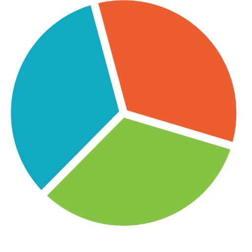

Survey Tools for Students
With the plethora of survey tools on the web today, a novice survey creator can be easily confused and overwhelmed by the amount of different choices available. That's why we created this website to help you learn more about survey tools and find one with the perfect features suiting your purposes!
Get started!
-
arrow_drop_down_circleFilter by features
search
| Tool Name | Free Account | Easy to Use | Data Analysis | Templates | Question Bank | Collaboration Tools |
|---|---|---|---|---|---|---|
 SurveyMonkey |
check_circle | check_circle | check_circle | check_circle | check_circle | check_circle |
 Google Forms |
check_circle | check_circle | check_circle | check_circle | check_circle | |
SurveyGizmo |
check_circle | check_circle | check_circle | check_circle | check_circle | |
Qualtrics |
check_circle | check_circle | check_circle | check_circle | check_circle | |
Typeform |
check_circle | check_circle | check_circle | check_circle | ||
Checkbox Survey |
check_circle | check_circle | check_circle | check_circle | ||
|  SoGoSurvey |
check_circle | check_circle | check_circle | check_circle | check_circle |